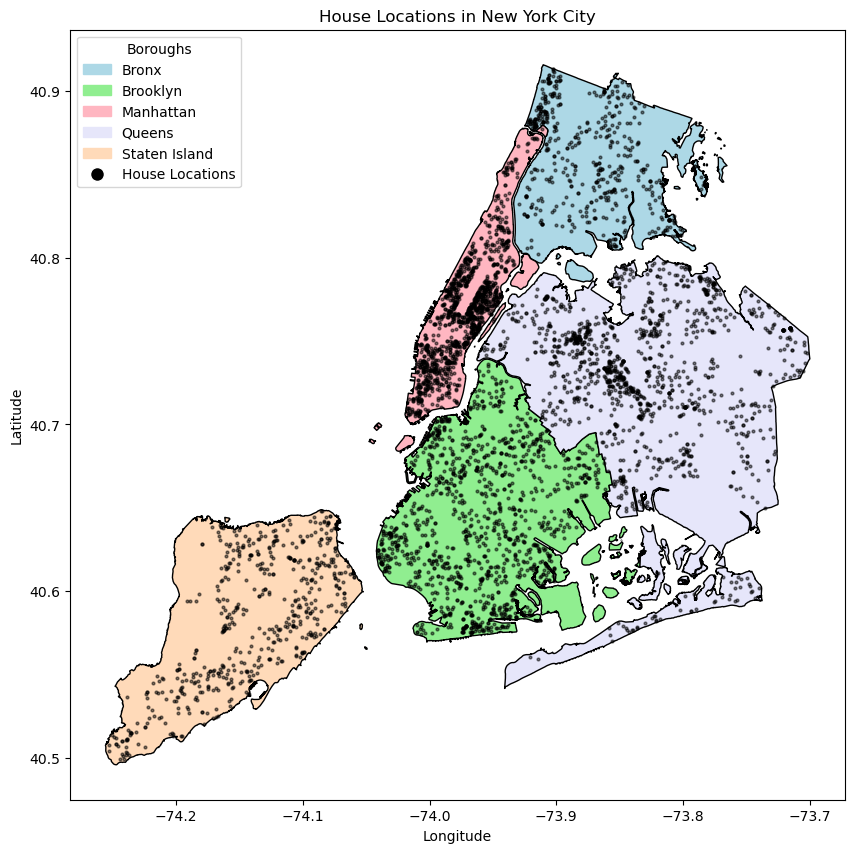
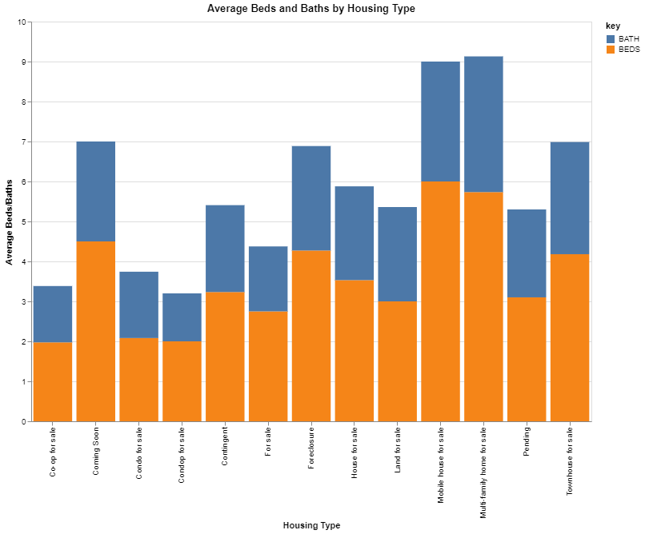
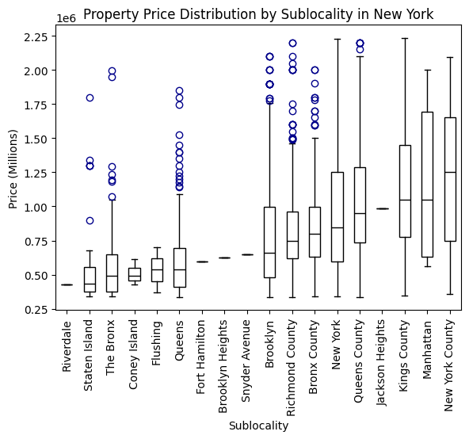

NYC Housing Market Analysis
Topic Introduction
Understanding and analyzing the New York housing is crucial for a variety of reasons. Firstly, NYC has huge housing market, because of its massive population, and therefore has a wide variety of hosuing that can be analyzed. Analyzing NYC's housing market and the factors that drive it can not only give insight into the trends of the broader housing market across the nation, but can reflect economic trends and urban development patterns.
Secondly, New York has a huge job market and as college students many of the Co-Ops, and later full time jobs, will be located in New York. Looking at the housing market in the city and learning about the features that make housing more expensive will potentially help lead us to making smarter decisions when deciding on housing in the future. Also, learning about the housing market in general will be helpful when looking at housing in other locations.
To find more information on the change of New York housing, we found two interesting articles. "Pricing Out Phenomenon" talks about the growing inequality in the housing markets and the effects of COVID-19. "Why is Manhattan so Expensive?" discusses the signficant increase in housing prices in Manhattan over the past 3 decades.

Tasks and Our Data
Tasks
- High level- Derive: Price of house / Square Footage of Property to find the average square foot price
- Mid Level- Locate/Lookup: Map of where the properties are located where the user can lookup the locations
- Low Level- Summarize: General housing prices in NYC and how they change in each borough
Our Data
We sourced our housing data from a kaggle dataset. The data has 17 features and 4801 rows. We also preprocessed the data by removing NaN rows and any prices outliers (which we determined to be any values 1.5 times greater than or less than the 75th percentile or the 25th percentile respectivley).
Feature List:
- BROKERTITLE: Title of the broker
- TYPE: Type of the house
- PRICE: Price of the house
- BEDS: Number of bedrooms
- BATH: Number of bathrooms
- PROPERTYSQFT: Square footage of the property
- ADDRESS: Full address of the house
- STATE: State of the house
- MAIN_ADDRESS: Main address information
- ADMINISTRATIVE_AREA_LEVEL_2: Administrative area level 2 information
- LOCALITY: Locality information
- SUBLOCALITY: Sublocality information
- STREET_NAME: Street name
- LONG_NAME: Long name
- FORMATTED_ADDRESS: Formatted address
- LATITUDE: Latitude coordinate of the house
- LONGITUDE: Longitude coordinate of the house
Static Map
This static visualization provides a geographical overview of housing locations within New York City, with each borough represented by a distinct color. Each dot on the map signifies a specific housing instance recorded in our dataset. From this visualization we can see that New York County has the densest housing, with many dots overlapping one another. This is because of the fact that most of the listings in this area were apartments in the city meaning their coordinates were stacked on top of one another. In contrast, boroughs such as Staten Island exhibit a more dispersed distribution of housing dots. This reflects the suburban landscape of Staten Island, where properties are typically more spread out compared to the densely packed urban environment of New York County. The reduced overlap and greater distance between dots in Staten Island highlight the suburban character and larger property lots characteristic of this borough.
Beds and Baths Stacked Bar Chart
The stacked barchart shows that, on average, multi-family homes and mobile houses have significantly more combined beds and baths than other types of units for sale. For multi-family homes, the data makes sense as these units tend to be bigger (usually intended for multiple families) and often have many beds and baths. However, it is strange that mobile houses would have more beds and baths than other types of units as mobile houses tend to be smaller domiciles. Looking deeper into the data, though, shows that there is only one mobile house unit listed, so drawing conclusions from the beds and baths of this type of unit does not say much.
Furthmore, the barchart also shows that most units for sale have between 2 to 4 beds and 1 to 2 baths. This result was expected, as most units tend to have around 2 or 3 beds and 1 or 2 baths. The data also shows that units have more beds than baths, which also holds true for the wider housing market. Overall, the barchart provides insight into the distrubtion of beds and baths across the various types of units for sale.
D3 Scatter
This D3 scatterplot shows the relationship between the price of a property and the square footage of the property. From this we are able to draw trends between how much a property costs and the size of the property. We can see that there is a semi positive corelation as we move more to the right of the graph. However, on the left side of the graph the data is very clustered and we can't see any clear trends. This does reveal useful information about the data though. Since New York City has a wide range of varety across the different boroughs, the same price property in one area could be way different size than the same price property in another area of the city. For example, a property of 500sqft in Staten Island may be way less than a studio of the same size in the heart of Manhattan. This finding is reflected in the data very well.
Interactive Scatter Plot of the Features Per Sublocatiy
The interacive scatter plot allows the viewer to compare multiple features of the properties across the different boroughs of NYC. Even though it is a scatter plot among categories rather than a continuous factor, we have still chosen to represent it through a scatter plot with nomial x-axis. This is because this lets the viewer see the density of how the data is spread out and we have set the marker points to have a lower alpha opacity to allow for this. If we chose to use a box plot instead we would lose this ability to track clustering. By having the user select which feature they want to focus on, they can more clearly zone in on the specific features and compare them to the others more easily. Some findings that can be concluded from this visualization are that King's County, the Bronx, and Brooklyn have a much wider range of all the features while Coney Island, Flushing, and Manhattan have a smaller range. This could be due to an overall limited number of data on properites in the area or also the type of properties in those locations are more similar to each other feature wise.
Static Box Plot
The side-by-side box plot shows the property price distribution across various sublocalities, ranked by their median scores. Notably, New York County emerges with the highest median price, consistent with its status as the heart of New York City. Its premium prices are because of the fact there is little or no space to build more housing. On the other hand, Riverdale's plot lacks completeness due to missing data, hindering a comprehensive representation. Despite this, it is evident that Riverdale falls towards the lower end of the price spectrum. Staten Island has the second lowest price, characterized by its suburban nature and exhibits a lower median price compared to New York County. This aligns with the expectation of more affordable prices in suburban areas with greater availability of properties. The presence of blue circles in the box plots indicates outliers. Data points that significantly deviate from the typical price range within their respective sublocalities. These outliers typically represent exceptional cases where property prices diverge notably from the norm, often due to unique situations.
Interactive Map of the Housing Locations and Features
An interactive folium map of the housing locations and their features gives a good overall representation of the data and allows the user to fully explore it while also giving them a better conceptual understanding of the data. By plotting out all the locations on a physical map, the viewer is able to see density and spread of the data in a way that would not be possible with the raw numbers. Additional, the interactive aspect allows the user to really explore the different areas of NYC down to the street names, a feature that is lost in our static representation of the map. This interactive map not only allows for a zoom, but a hover and popup feature have also been implemented. When the user hovers the mouse over any of the data points the address of the location is shown. This makes a good hover feature because it's modeled off of how a user may use a map app on a phone and gives a bit more information at a quick glance that they will not get from just looking at a street name. Upon a further click the user is then presented with the full features of the house including price and square foot. This is similar to how an actual house listing site may function. If the dataset were to include images of the property, we could further display these with a popup function. Overall, this interacive map gives the user a sense of the full data set and can let them compare different property features and prices in the greater NYC as well as specific areas of the city to determine which features are most important in the housing markett.
Conclusions
Based on the visualizations, housing location is the most significant factor that affects price. The different features (beds, baths, sqft, type) affect price, but location is the ultimate factor that determines how expensive a unit will be. Different neighborhoods have different advantages and factors, such as the Upper West and East sides being close to Central Park, and the various advantages/disadvantages impact the price of the units in that neighborhood. The spatial data also demonstrates the different neighborhoods of New York. For example, through the two maps, it can be seen how there are dense clusters of housing to the right and left of Central Park, which represents the Upper East and West sides respectivley. There are clusters of housing spread throughout the city and each neighborhood has unique characteristics. Finally, the data also shows that there is an incredible variety of housing in New York, not only in location, but also unit type, price, size, beds and baths. The variety of housing contributes to the diversity and ever changing housing market.
In the future, there a couple changes that can be made to our visualizations. Firstly, we would like to add photos of each unit to our data set. This would be added to the interactive map, so that users can see a photo of the house when the click on it. Secondly, it would be interesting to add a search feature that could allow users to filter out data rows based on the values of the features, for example filtering out any unit that is greater than a certain number of square feet. Finally, we would also like compare New York to other housing markets, such as other cities or even larger areas. Doing so could create interesting comparative visualizations and would give good insight into how New York is a unique housing market.